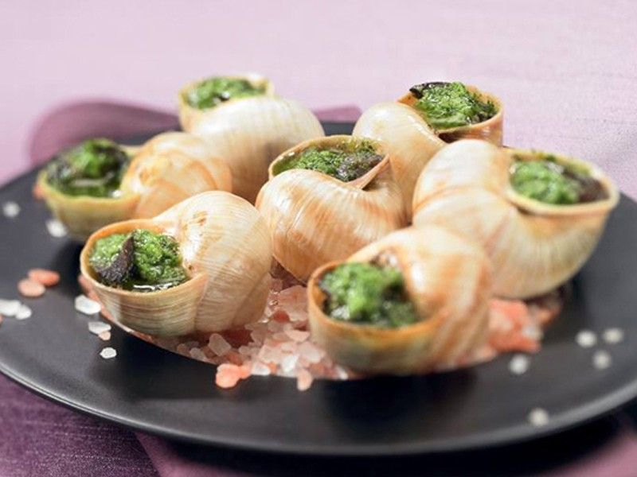
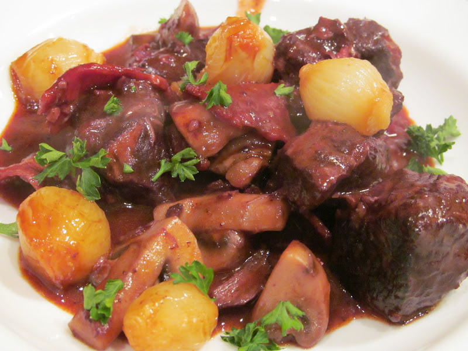
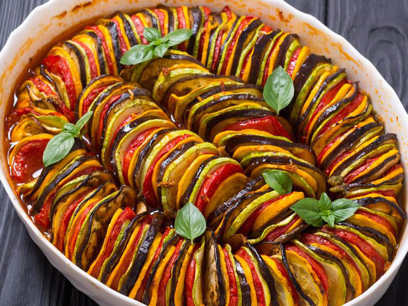

Global Food
Francia
Escargots de Bourgogne

En español "caracoles de Borgoña", consiste en caracoles de la especie Helix pomatia, servido ya cocidos en su almeja rellena de manteca de ajo y perejil. Y es normalmente servido como una entrada en los restaurantes franceses.
Bœuf bourguignon

Tambien llamada carne a la Borgoña, y su nombre viene de sus dos ingredientes principales, la carne y el vino. Consiste en un estofado de carne cocido en vino tinto de Borgoña y aromatizado con ajo, cebolla, zanahoria y sal, variando dependiendo de la versión.
Ratatuille

Consiste en guisar tomate, ajo, pimiento morrón, cebolla, calabaza y berenjena en proporciones variables y cortados en trozos, en aceite de oliva. Se puede cocinar las hortalizas todas juntas o por separado; algunos cocineros dicen que deben prepararse por separado y luego cocinarlas todas juntas en su fase final.